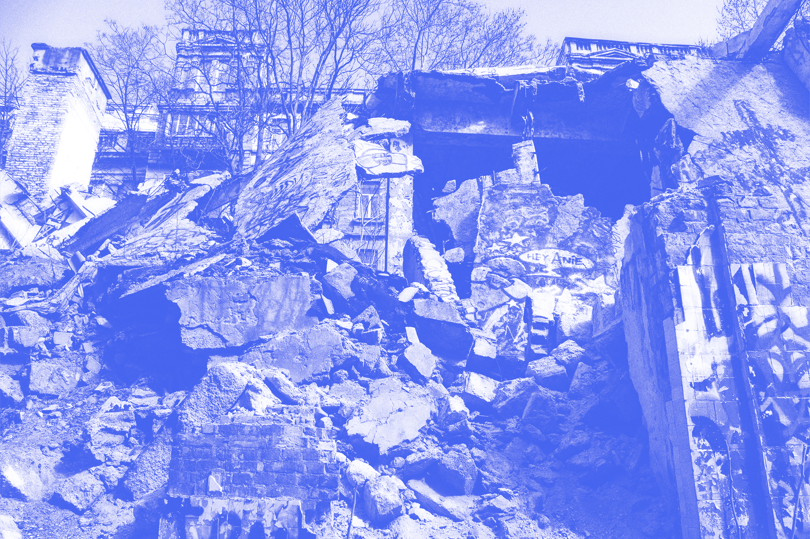
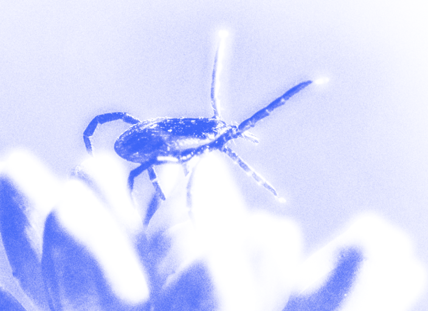
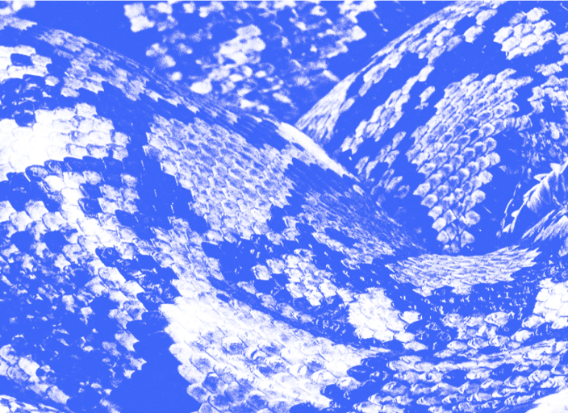

Земля уходит из-под ног
30.03.2023 11:10
Мастноу



Землетрясение — это естественное явление, которое происходит в результате движения и смещения земной коры. Оно может происходить в любой точке Земли и вызывает колебания и вибрации поверхности, которые могут приводить к разрушениям зданий, дорог, мостов и других сооружений.
О землетрясениях
Что делать при землетрясениях?
1. Немедленно попробуйте найти укрытие. Если вы находитесь в здании, ищите крепкие конструкции, такие как стойки, дверные проемы, стены, под столом или кроватью. Если вы на улице, уберитесь под открытое пространство, далеко от зданий, деревьев, столбов и других объектов, которые могут упасть.
2. Закройте за собой двери, чтобы защититься от обломков и уменьшить распространение пожара.
3. Если вы находитесь в здании, не пользуйтесь лифтом, используйте лестницу.
4. Если вы находитесь внутри здания, держитесь подальше от стеклянных поверхностей, зеркал, окон и других предметов, которые могут разбиться.
5. Если вы на улице, держитесь подальше от зданий, линий электропередач, деревьев и других предметов, которые могут упасть.
6. Если вы в автомобиле, остановитесь на безопасном месте, убедитесь, что вы находитесь подальше от зданий и линий электропередач, оставайтесь в машине и не переходите дорогу, пока землетрясение не закончится.
7. Если вы находитесь на открытом пространстве, не бегите и не паникуйте, оставайтесь на месте, держитесь подальше от высоких зданий, линий электропередач и других объектов, которые могут упасть.
8. После окончания землетрясения, оставайтесь на месте до тех пор, пока вы не будете уверены в своей безопасности. Оцените свою ситуацию и только затем двигайтесь дальше.
Важно помнить, что землетрясения могут быть опасными и неожиданными. Поэтому необходимо заранее позаботиться о том, чтобы иметь запас продуктов питания и воды, а также средства первой помощи

Ничто так не помогает повторять географию, как извержения вулканов и землетрясения

Чапаев и землетрясение
-Чапаев, что же нам делать? — кричал один из офицеров, бегущий мимо.
-Не знаю, — ответил Чапаев, — но вот моя фуражка держится крепко!
Вам также пригодится:

Клещи против комаров

10 самых badass змей

А у нас в квартире газ!

Слишком много воды